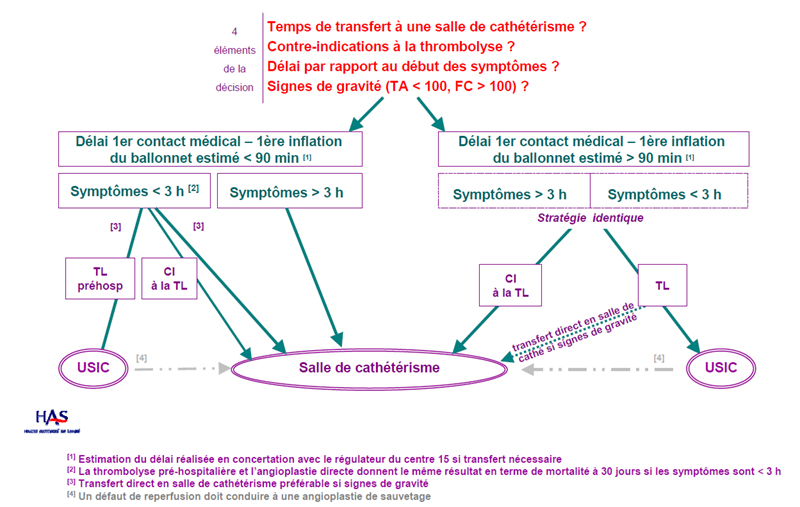

Thrombolyse ou fibrinolyse
AdulteSpécialité : cardiologie / vasculaire /
Points importants
- Définition : agent pharmacologique permettant une dissolution de la fibrine et donc la limitation de l'extension d'une thrombose aiguë artérielle ou veineuse
-
Traitement utilisé dans 4 situations aiguës :
- syndrome coronarien aigu avec élévation du segment ST (SCA ST+) (la fibrinolyse est une des 2 stratégies de reperfusion coronaire)
-
embolie pulmonaire massive compliquée d'un état de choc sévère ou d'un arrêt circulatoire (AC) :
- 30% de mortalité en intrahospitalier aux USA,
- 2e cause de mort subite
-
ischémie cérébrale < 3 heures :
- 3e cause de mortalité avec 10% décès et 1re cause d'handicap non traumatique en France
- 130 000 cas en France en 2007 dont 40 000 décès et 30 000 handicaps lourds
- occlusion de cathéter central : incidence 2-40% selon le type de cathéter et leur localisation
- De nombreuses contre-indications à respecter en raison du risque hémorragique
- Le médecin prescrivant un thrombolytique devra peser le rapport bénéfice-risque lié à l'injection du produit
- Importance de l'heure de début du trouble : la réussite de la fibrinolyse diminue avec l'augmentation de la durée de l'ischémie
Indications
SCA ST+
 fichier_664 Algorithme Prise en charge et orientation d'une suspicion de SCA ST+ par le SAMU
- Douleur thoracique précordiale, rétrosternale constrictive de repos avec irradiation au membre supérieur gauche, au cou et à la mâchoire prolongée ET résistante aux dérivés nitrés
- ECG : Sus-décalage du segment ST ≥ 1 mm dans au moins 2 dérivations standard ou ≥ 2 mm dans au moins 2 dérivations précordiales contiguës
- BBG récent
-
Indications en préhospitalier mais également aux urgences si pas de salle de cathétérisme dans l’hôpital :
- si délai entre le 1er contact médical (ECG qualifiant) et arrivée dans le service de cardiologie interventionnelle (délai porte à porte-cardio) prévue > 45 min : indication formelle quelque soit la durée de la douleur (< 12h.)
- si délai porte à porte cardio < 45min, et si douleur < 3h : soit thrombolyse, soit une angioplastie primaire selon habitudes locales.
- si délai porte à porte cardio < 45min, et si douleur > 3h : angioplastie primaire (ATL)
- Pourcentage de succès primaire d’une thrombolyse : 60% versus 90% pour l’ATL
Embolie pulmonaire massive
- Contexte : Immobilisation prolongée, grossesse et post-partum, chirurgie récente
- Douleur thoracique brutale + dyspnée
- Signes insuffisance cœur pulmonaire aigu
- Signe de phlébite des MI : œdème, douleur
- Signes de choc, en particulier cardiogénique, cyanose
- ECG : Tachycardie sinusale, BBD , aspect S1Q3, déviation axiale droite
- AC par dissociation électro-mécanique
Accident vasculaire cérébral ischémique
- Signes de localisation neurologique d’apparition brutale : dysarthrie ou aphasie, hémiparésie, hémiplégie
- Date de début des symptômes < 3h
- Etablir le score de NIHSS
- Une imagerie cérébrale est indispensable avant toute thrombolyse pour AVC
Contre-indications
ABSOLUES
- Hémorragie cérébro-méningée (à vie)
- Manifestations hémorragiques en cours ou récentes
- Néoplasie profonde majorant le risque hémorragique
- Traumatisme crânien grave ou AVC ischémique < 2 mois
-
AVC ischémique < 3 heures, contre-indications supplémentaires :
- score NIHSS > 25 ou déficit neurologique mineur avec score de NHSS < 4
- imagerie cérébrale montrant une hémorragie cérébro-méningée
- convulsions
- amélioration rapide et spontanée des symptômes
- symptomatologie d'hémorragie sous-arachnoïdienne avec TDM cérébral sans injection normal
- héparinothérapie dans les 48 dernières heures avec TCA > 2
- ATCD d'AVC chez un patient diabétique (pas de délai)
- AVC ou traumatisme crânien grave < 2 mois
- IDM dans les 3 mois précédents
- âge : < 18 ans ou > 80 ans
- Ulcère digestif avec saignement récent ou encore symptomatique
- Traumatisme sévère (fracture) ou examen invasif < 15 jours (ponction biopsie hépatique, PL, ponction pleurale, pose cathéter central artériel ou veineux, ponction artérielle centrale)
- MCE prolongé < 10 jours
- Intervention neurochirurgicale < 2 mois
- Autre chirurgie < 10 jours
- Tumeur cérébrale ou médullaire
- Maladie artérioveineuse cérébrale
- Rétinopathie diabétique ou autre pathologie ophtalmique à risque hémorragique
- HTA sévère non contrôlable avec traitement
- Traitement par AVK avec INR > 1,5
- Pathologie de l'hémostase
- Thrombopénie : < 100 000 plaquettes/mm3
- Suspicion péricardite ou dissection aortique ou endocardite
- Pancréatite aiguë
- Grossesse - allaitement - accouchement récent
- Allergie connue à la streptokinase
RELATIVES
- Insuffisances rénale et hépatique
- Age > 75 ans
- HTA chronique non contrôlée
Description de la technique
BIOLOGIE SYSTEMATIQUE
-
Si décision de thrombolyse en intrahospitalier :
- NFS plaquettes
- TP-TCA / INR, fibrinogène
- ionogramme sanguin - urée - créatinémie
- groupe Rhésus - RAI en cas de transfusion de produits sanguins
IMAGERIE
- La TDM ou IRM sont indispensables devant toute suspicion d'AVC ischémique ayant des critères de thrombolyse (sera pratiquée en unité de neurologie par un neurologue)
- Pour l'EP massive, l'angioscanner est difficilement réalisable si le patient est instable
- L'échographie cardiaque est un examen de premier ordre montrant des signes de cœur pulmonaire aigu. En absence d'IVD échographique, ce diagnostic sera remis en question
MISE EN ROUTE DU TRAITEMENT SELON LES INDICATIONS
SCA ST +
-
Ténectéplase : à utiliser en 1re intention dans le SCA
- bolus IVD unique avec dose/ poids (100UI/ kg)
- < 60kg : 6000 UI / 30 mg/ 6 mL de solution
- > ou = 60- < 70 kg : 7000UI/ 35 mg/ 7 mL
- > ou = 70- < 80 kg : 8000 UI /40 mg/ 8 mL
- > ou = 80- < 90 kg : 9000 UI/ 45 mg / 9 mL
- > ou = 90kg : 10 000 UI / 50 mg / 10 mL
-
Traitements adjuvants :
- aspirine et clopidogrel (grade A)
- anti-thrombotique (HBPM : enoxaparine est meilleure que l'HNF dans cette indication)
EP massive
- Arrêt héparinothérapie au début de la thrombolyse, à reprendre quand TCA ≤ 2
- Alteplase : 10mg bolus IVD puis 90mg IVSE sur 2 heures
AVC ischémique < 3 heures
-
Alteplase :
- 0,9 mg/kg (maximum 90 mg) avec 10% dose en bolus IV sur 1 min et le reste en IVL sur 60 min
- pas d'association à une héparinothérapie ou antiagrégants plaquettaires dans les 24h suivant la thrombolyse
- Si HTA initiale, traitement par nicardipine IVSE pour TA < 185/110 mmHg
Thrombose KT central
- Succès thrombolyse locale dans 85-90% cas
-
Altéplase :
- 2 mg sur 30 min en intraluminal
- si échec, répéter la dose 2 mg sur 4 heures
Arrêt cardiaque
- Il n'y pas d'étude démontrant une augmentation de survie parmi les patients thrombolysés dans le cadre d'un AC hormis si EP massive
- AC survenant dans la prise en charge d'un patient présentant un SCA ST+ diagnostiqué avec reprise d'une activité cardiaque : ATL en première intention, sinon thrombolyse
-
AC survenant dans la prise en charge d'un patient ayant un SCA ST+ diagnostiqué sans reprise d'une activité cardiaque :
- fibrinolyse à discuter au cas par cas mais la RCP sera prolongée à 60-90 min (aucune preuve de son efficacité)
-
Prise en charge d'un patient en AC sans étiologie évidente :
- pas d'indication à une thrombolyse
- Les manœuvres de réanimation cardio-pulmonaire ne contre-indiquent pas une thrombolyse
MECANISME / DESCRIPTION
Thrombolytiques fibrino-dépendants
- Nécessité de la présence de fibrine donc de thrombus pour transformer le plasminogène en plasmine
-
Altéplase (tPA) :
- activateur synthétique du plasminogène de 1re génération, identique à la protéine naturelle
- demi-vie : 4-6 minutes
- affinité particulière pour la fibrine
- action essentiellement à la surface du thrombus
- thrombolytique de prédilection pour le traitement des AVC
-
Retéplase :
- activateur synthétique du plasminogène de 2e génération
- protéine non glycosylée avec une mutation à type de délétion : ainsi la retéplase ne contient plus que 355 acides aminés des 527 de la protéine naturelle
- moins grande affinité pour la fibrine que la protéine native ce qui permet une meilleure pénétration à l'intérieur du thrombus
- à haute concentration, pas d'inhibition compétitive avec plasminogène, ce qui permet une double action de la retéplase et du plasminogène naturel
- demi-vie : 18 min
-
Ténectéplase :
- protéine synthétique glycosylée de 527 acides aminés
- modification de la protéine naturelle par diverses substitutions acides aminés, ce qui lui confère une meilleure affinité pour la fibrine
- demi-vie : 20-24 min
- métabolisme hépatique
- thrombolytique de prédilection dans le SCA
Thrombolytiques fibrino-indépendants
- Fibrinolyse systématique indépendamment de la présence de fibrine ou non
-
Streptokinase :
- protéine antigénique produite à base les streptocoques bhémolytiques avec réactions allergiques et fièvre fréquentes
- protéine devenant active en se fixant au plasminogène. Le complexe ainsi formé hydrolyse le plasminogène en plasmine
- demi-vie : 20 min mais une fraction libre de la molécule a une demi-vie de 80 min
- possible HoTA liée à la dose administrée
- 1 unique injection en raison des effets secondaires
Action de l'acide tranexamique
- Fixation réversible au niveau d'un résidu lysine du plasminogène auquel il reste fixé même après la transformation du plasminogène en plasmine. Le nouveau complexe plasmine-acide tranexamique rend la plasmine inactive (peu utilisé en pratique)
PHYSIOPATHOLOGIE
- Le plasminogène, protéine d'origine hépatique, se fixe à la matrice de fibrine mais est inactive à son état natif
- Le t-PA (tissue-plasminogen activator), libéré par les cellules endothéliales, lyse le complexe formé par la fibrine et le plasminogène et active la transformation du plasminogène en plasmine par hydrolyse d'un acide aminé arginine. Celle-ci, à son tour, lyse le caillot en transformant la fibrine en produits de dégradation de la fibrine
Complications
HEMORRAGIE CEREBRALE
-
Respectivement à 0,5 à 1% dans le SCA et 6% dans AVC même si respect strict des contre-indications :
- arrêt de la thrombolyse et de tout autre traitement anticoagulant avec antidote de l'héparine par sulfate de protamine
- remplissage ± transfusion
-
antidote des thrombolytiques :
- acide tranexamique (Exacyl®) 0,5 -1,5 IVL x 2-3 / j
- à n'utiliser qu'en cas de pronostic vital engagé car risque fort de CIVD
SURVENUE DE REACTIONS ALLERGIQUES
- Prévention avec hémisuccinate hydrocortisone : 100mg bolus IVD puis 50mg /6h
Surveillance
BIOLOGIQUE
- TP, TCA, INR, fibrinogène, Hb
PARAMETRES CLINIQUES
- Pouls, PA, SpO2 + EVA, conscience, diurèse
- Examen neurologique dans le cadre de AVC : en cas d'aggravation, arrêt thrombolyse et 2ème TDM cérébrale sans injection en urgence
-
ECG en cas de SCA ST+ :
- arythmie de reperfusion (notamment rythme idio-ventriculaire accéléré)
- réduction de la douleur
- aplatissement du segment ST
Bibliographie
-
Recommandations concernant la prise en charge de l'infarctus du myocarde à la phase aiguë en dehors des services de cardiologie ; 2007 ; www.has-sante.fr
-
Les syndromes coronariens aigus - donnés générales ; 2007 ; www.has-sante.fr
-
Recommandations concernant la prise en charge initiale des patients adultes atteints d'accident vasculaire cérébral - aspect médicaux ; 2002 ; www.has-sante.fr
-
Wanda L Rivera-Bou ; Thrombolytic therapy ; 2008 ; www.emedecine.com
-
Craig F Feied ; pulmonary embolism ; 2008 ; www.emedecine.com
Auteur(s) : Hélène BELLANGER, Sébastien GALLULA